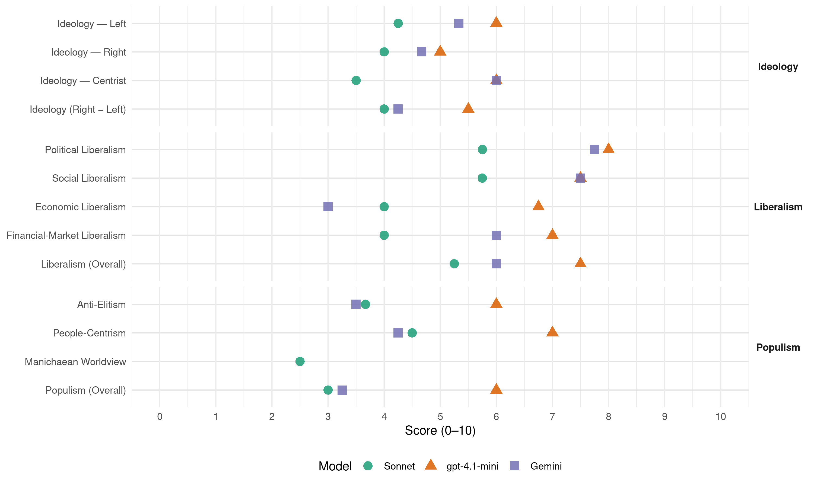

Sp (Norway, 2017)
manifesto_id 12810_201709
Get full text: This site shows derived annotations and short verbatim quotes only. The full manifesto text is © Manifesto Project / WZB — obtain it via manifesto-project.wzb.eu using the manifesto_id above.
Headline scores
| Dimension | Sonnet | gpt-4.1-mini | Gemini |
|---|---|---|---|
| Populism (Overall) | 3.0 | 6.0 | 3.2 |
| Anti-Elitism | 3.7 | 6.0 | 3.5 |
| People-Centrism | 4.5 | 7.0 | 4.2 |
| Manichaean Worldview | 2.5 | – | – |
| Ideology (Right − Left) | 4.0 | 5.5 | 4.2 |
| Liberalism (Overall) | 5.2 | 7.5 | 6.0 |
| Political Liberalism | 5.8 | 8.0 | 7.8 |
| Social Liberalism | 5.8 | 7.5 | 7.5 |
| Economic Liberalism | 4.0 | 6.8 | 3.0 |
| Financial-Market Liberalism | 4.0 | 7.0 | 6.0 |
Evidence per dimension
Economic Liberalism
Gemini · score 5.0 · mixed · chunk 1
“motstander av en uhemmet markedsliberalisme”
Senterpartiet er motstander av en uhemmet markedsliberalisme og løfter fram folkestyret og blandingsøkonomien som alternativ.
Gemini · score 5.0 · mixed · chunk 2
“staten må støtte dette arbeidet ved hjelp av ordninger”
lavutslippssamfunnet. Senterpartiet mener staten må støtte dette arbeidet ved hjelp av ordninger som bidrar til risikoavlastning
Gemini · score 3.0 · verified · chunk 3
“motarbeide sentralisering og privatisering av”
offentlige sykehusene og vil motarbeide sentralisering og privatisering av tilbudet. Sykehusfusjoner
Gemini · score 3.0 · verified · chunk 4
“erstatte EØS-avtalen med handels- og samarbeidsavtaler”
Senterpartiet vil erstatte EØS-avtalen med handels- og samarbeidsavtaler med EU for å sikre våre interesser.
gpt-4.1-mini · score 6.0 · verified · chunk 1
“Senterpartiet er motstander av en uhemmet markedsliberalisme og løfter fram folkestyret og blandingsøkonomien som alternativ”
Senterpartiet er motstander av en uhemmet markedsliberalisme og løfter fram folkestyret og blandingsøkonomien som alternativ. Fred mellom folk og nasjoner bygger på gjensidig respekt og toleranse.
gpt-4.1-mini · score 7.0 · verified · chunk 2
“Senterpartiet vil arbeide for forutsigbare avgifter med lang tidshorisont og miljøregelverk som fremmer norsk produksjon og verdiskaping”
Senterpartiet vil arbeide for forutsigbare avgifter med lang tidshorisont og miljøregelverk som fremmer norsk produksjon og verdiskaping. – Videreføre CO2-kompensasjon og sikre norsk industri konkurransedyktige vilkår i klimapolitikken.
gpt-4.1-mini · score 7.0 · verified · chunk 3
“rammefinansiering ut fra behov”
Finansiering av sykehus må legge til rette for sektorens behov for økte investeringer i bygg og utstyr og sikring av beredskap i hele landet. Senterpartiet mener at sykehus må finansieres på samme måte som andre velferdsområder, som eldreomsorg og skole, altså gjennom rammefinansiering ut fra behov.
gpt-4.1-mini · score 7.0 · verified · chunk 4
“frie markeder og konkurranse”
Senterpartiet mener at vi i dag har et fornuftig straffenivå. Dette særlig etter at de mest alvorlige forbrytelsene har fått økte strafferammer de siste årene, samt at foreldelsesfristen ble fjernet i volds- og sedelighetssaker. Senterpartiet mener at straffens form og innhold er av sentral betydning for straffens virkning på den kriminelle og dermed på tilbakefallsstatistsikken.
Sonnet · score 4.0 · verified · chunk 1
“motstander av en uhemmet markedsliberalisme”
Senterpartiet er motstander av en uhemmet markedsliberalisme og løfter fram folkestyret og blandingsøkonomien som alternativ.
Sonnet · score 4.0 · mixed · chunk 2
“Mer konkurranse og innovasjon skal sikres”
Mer konkurranse og innovasjon skal sikres ved hjelp av funksjonskrav. Det vil for eksempel bety at istedenfor krav til balansert ventilasjon…
Sonnet · score 4.0 · verified · chunk 3
“norske sykehus ikke trenger mer konkurranse”
Senterpartiet mener at norske sykehus ikke trenger mer konkurranse, men mer samarbeid om pasientene og at bruk av private må reguleres gjennom avtaler som sikrer offentlig styring.
Sonnet · score 4.0 · verified · chunk 4
“handels- og investeringsavtaler ikke må begrense det nasjonale og lokale folkestyret”
At handels- og investeringsavtaler ikke må begrense det nasjonale og lokale folkestyret, inkludert råderetten over naturressursene. Senterpartiet går derfor mot norsk tilknytning til TTIP- og TISA-avtalen.
Financial-Market Liberalism
Gemini · score 6.0 · verified · chunk 1
“Velfungerende og velregulerte finansmarkeder er avgjørende”
Velfungerende og velregulerte finansmarkeder er avgjørende for en god økonomi. Reguleringer skal sikre finansiell stabilitet
gpt-4.1-mini · score 7.0 · verified · chunk 1
“Velfungerende og velregulerte finansmarkeder er avgjørende for en god økonomi”
Velfungerende og velregulerte finansmarkeder er avgjørende for en god økonomi. Reguleringer skal sikre finansiell stabilitet, god forbrukerbeskyttelse og et trygt og sikkert betalingssystem.
Sonnet · score 5.0 · verified · chunk 1
“Velfungerende og velregulerte finansmarkeder er avgjørende”
Velfungerende og velregulerte finansmarkeder er avgjørende for en god økonomi. Reguleringer skal sikre finansiell stabilitet, god forbrukerbeskyttelse og et trygt og sikkert betalingssystem.
Sonnet · score 4.0 · verified · chunk 2
“risikolånekapital og eierkapital i private bedrifter”
Treforedlingsindustrien må få nye økonomiske rammebetingelser ved at staten tilrettelegger med nødvendige investeringstilskudd, risikolånekapital og eierkapital i private bedrifter.
Sonnet · score 3.0 · verified · chunk 4
“Ikke tillate reklame for forbrukslån uten sikkerhet”
- Ikke tillate reklame for forbrukslån uten sikkerhet, og med høye renter på norske medieplattformer.
Political Liberalism
Gemini · score 8.0 · verified · chunk 1
“menneskerettighetene og den liberale rettsstaten”
Senterpartiet vil forsvare menneskerettighetene og den liberale rettsstaten.
Gemini · score 7.0 · verified · chunk 2
“Innsigelsesinstituttet utgjør en viktig funksjon i demokratiet”
full elektronisk saksbehandling i byggesaker er et viktig forenklingsgrep. Innsigelsesinstituttet utgjør en viktig funksjon i demokratiet, men det må begrenses
Gemini · score 8.0 · verified · chunk 3
“domstolene skal avgjøre om vilkårene”
Senterpartiet holder på prinsippet om at domstolene skal avgjøre om vilkårene for politiovervåkning er
Gemini · score 8.0 · verified · chunk 4
“velfungerende rettsstat skal sørge for”
En velfungerende rettsstat skal sørge for at samfunnets lover og rammeverk er likt for alle.
gpt-4.1-mini · score 8.0 · verified · chunk 1
“Senterpartiet vil forsvare menneskerettighetene og den liberale rettsstaten”
Senterpartiet vil forsvare menneskerettighetene og den liberale rettsstaten. Med utgangspunkt i våre verdier, vil vi peke ut åtte særlige utfordringer som vi må finne en klok, politisk løsning på:
gpt-4.1-mini · score 8.0 · verified · chunk 2
“Senterpartiet vil videreutvikle og styrke dagens modell med regional og lokal forvaltning”
Senterpartiet vil videreutvikle og styrke dagens modell med regional og lokal forvaltning. I områder hvor vern er aktuelt, må verneprosessene foregå slik at lokalbefolkningen og grunneierne får reell innflytelse.
gpt-4.1-mini · score 8.0 · verified · chunk 3
“rettsikkerhet blir ivaretatt”
Alle som søker asyl i Norge skal ha trygghet for at deres rettsikkerhet blir ivaretatt. Senterpartiet mener ventetida på asylmottak må gjøres kortest mulig.
gpt-4.1-mini · score 8.0 · verified · chunk 4
“rettssikkerhet ivaretas”
Utlendingsmyndighetene må organiseres på en måte som sikrer en rask og forsvarlig saksbehandling og at den enkeltes rettssikkerhet ivaretas. Enslige mindreårige asylsøkere er spesielt sårbare, og de trenger trygge og gode oppvekstsvilkår.
Sonnet · score 6.0 · verified · chunk 1
“Folkestyret må hele tiden forsvares og forbedres”
Folkestyret må hele tiden forsvares og forbedres. Det bygger på at avgjørelser skal treffes nærmest mulig den de angår og forutsetter desentralisering av makt.
Sonnet · score 5.0 · verified · chunk 2
“Innsigelsesinstituttet utgjør en viktig funksjon i demokratiet”
Innsigelsesinstituttet utgjør en viktig funksjon i demokratiet, men det må begrenses slik at staten ikke unødig blander seg i det lokale sjølstyret.
Sonnet · score 6.0 · verified · chunk 3
“sikre politisk styring av sykehussektoren”
Denne må sikre politisk styring av sykehussektoren, og ansvarliggjøring av Stortinget i sykehuspolitikken.
Sonnet · score 6.0 · verified · chunk 4
“domstolene skal avgjøre om vilkårene for politiovervåkning er til stede”
Senterpartiet holder på prinsippet om at domstolene skal avgjøre om vilkårene for politiovervåkning er til stede og er mot ny lovgivning som åpner for økt overvåkning av lovlydige borgere.
Liberalism (Overall)
Gemini · score 6.0 · verified · chunk 1
“menneskerettighetene og den liberale rettsstaten”
Senterpartiet vil forsvare menneskerettighetene og den liberale rettsstaten.
Gemini · score 6.0 · verified · chunk 2
“Innsigelsesinstituttet utgjør en viktig funksjon i demokratiet”
full elektronisk saksbehandling i byggesaker er et viktig forenklingsgrep. Innsigelsesinstituttet utgjør en viktig funksjon i demokratiet, men det må begrenses
Gemini · score 6.0 · verified · chunk 3
“domstolene skal avgjøre om vilkårene”
Senterpartiet holder på prinsippet om at domstolene skal avgjøre om vilkårene for politiovervåkning er
Gemini · score 6.0 · verified · chunk 4
“velfungerende rettsstat skal sørge for”
En velfungerende rettsstat skal sørge for at samfunnets lover og rammeverk er likt for alle.
gpt-4.1-mini · score 7.0 · verified · chunk 1
“Senterpartiet vil forsvare menneskerettighetene og den liberale rettsstaten”
Senterpartiet vil forsvare menneskerettighetene og den liberale rettsstaten. Med utgangspunkt i våre verdier, vil vi peke ut åtte særlige utfordringer som vi må finne en klok, politisk løsning på:
gpt-4.1-mini · score 7.0 · verified · chunk 2
“Senterpartiet vil arbeide for forutsigbare avgifter med lang tidshorisont og miljøregelverk som fremmer norsk produksjon og verdiskaping”
Senterpartiet vil arbeide for forutsigbare avgifter med lang tidshorisont og miljøregelverk som fremmer norsk produksjon og verdiskaping. – Videreføre CO2-kompensasjon og sikre norsk industri konkurransedyktige vilkår i klimapolitikken.
gpt-4.1-mini · score 8.0 · verified · chunk 3
“rettsikkerhet blir ivaretatt”
Alle som søker asyl i Norge skal ha trygghet for at deres rettsikkerhet blir ivaretatt. Senterpartiet mener ventetida på asylmottak må gjøres kortest mulig.
gpt-4.1-mini · score 8.0 · verified · chunk 4
“rettssikkerhet ivaretas”
Utlendingsmyndighetene må organiseres på en måte som sikrer en rask og forsvarlig saksbehandling og at den enkeltes rettssikkerhet ivaretas. Enslige mindreårige asylsøkere er spesielt sårbare, og de trenger trygge og gode oppvekstsvilkår.
Sonnet · score 5.0 · verified · chunk 1
“forsvare menneskerettighetene og den liberale rettsstaten”
Senterpartiet vil forsvare menneskerettighetene og den liberale rettsstaten. Med utgangspunkt i våre verdier, vil vi peke ut åtte særlige utfordringer
Sonnet · score 5.0 · verified · chunk 2
“Mer konkurranse og innovasjon skal sikres”
Mer konkurranse og innovasjon skal sikres ved hjelp av funksjonskrav. Det vil for eksempel bety at istedenfor krav til balansert ventilasjon…
Sonnet · score 6.0 · verified · chunk 3
“likestilling og likeverd er en viktig forutsetning”
Senterpartiet mener likestilling og likeverd er en viktig forutsetning for at alle skal ha et verdig liv, uavhengig av kjønn, kjønnsidentitet, livssyn, seksuell legning, kulturell og språklig bakgrunn.
Sonnet · score 5.0 · verified · chunk 4
“rettssikkerhet ivaretas”
Utlendingsmyndighetene må organiseres på en måte som sikrer en rask og forsvarlig saksbehandling og at den enkeltes rettssikkerhet ivaretas.
Anti-Elitism
Gemini · score 4.0 · verified · chunk 1
“staten i praksis ikke er til stede”
Utviklingen fører til at staten i praksis ikke er til stede i store områder av Norge.
Gemini · score 3.0 · verified · chunk 2
“byråkratiske verneregimer iverksatt av statsapparatet”
er det beste vernet, langt bedre enn byråkratiske verneregimer iverksatt av statsapparatet. Klimapolitikken – veien videre
Gemini · score 3.0 · verified · chunk 3
“Politidirektoratet må legges ned”
Hverdagskriminalitet må prioriteres Politidirektoratet må legges ned Senterpartiet vil føre
Gemini · score 4.0 · verified · chunk 4
“internasjonal storkapital og folkevalgte”
forholdet mellom statlige myndigheter og multinasjonale selskaper – og dermed mellom internasjonal storkapital og folkevalgte.
gpt-4.1-mini · score 6.0 · verified · chunk 1
“Regjeringen Solberg er en av de mest sentraliserende regjeringer noensinne”
1) Samfunnet bygges nedenfra – stans sentraliseringen! Regjeringen Solberg er en av de mest sentraliserende regjeringer noensinne. Uansett spørsmål er svaret færre og større enheter og sentralisering.
Sonnet · score 3.0 · verified · chunk 1
“storkapitalen og de multinasjonale selskapenes interesser”
samarbeidet mellom land har blitt preget av storkapitalen og de multinasjonale selskapenes interesser. Senterpartiet er kritisk til dette
Sonnet · score 2.0 · mixed · chunk 2
“byråkratiske verneregimer iverksatt av statsapparatet”
«Vern gjennom bruk» er det beste vernet, langt bedre enn byråkratiske verneregimer iverksatt av statsapparatet.
Sonnet · score 3.0 · verified · chunk 3
“Ressursene må brukes på pasientene, ikke på byråkrati”
Norske sykehus må organiseres slik at leger og sykepleiere får mer tid til pasientkontakt. Ressursene må brukes på pasientene, ikke på byråkrati og rapportering.
Sonnet · score 5.0 · verified · chunk 4
“maktforskyvningen som i lang tid har skjedd i forholdet mellom statlige myndigheter og multinasjonale selskaper”
Senterpartiet er bekymret for den maktforskyvningen som i lang tid har skjedd i forholdet mellom statlige myndigheter og multinasjonale selskaper – og dermed mellom internasjonal storkapital og folkevalgte.
Ideology — Centrist
Gemini · score 6.0 · verified · chunk 1
“bygge samfunnet nedenfra. Vi vil arbeide”
Senterpartiet vil bygge samfunnet nedenfra. Vi vil arbeide for et samfunn der mennesker kan utvikle seg fritt.
gpt-4.1-mini · score 7.0 · verified · chunk 1
“Senterpartiet vil bygge samfunnet nedenfra”
Senterpartiet vil bygge samfunnet nedenfra. Vi vil arbeide for et samfunn der mennesker kan utvikle seg fritt. Samfunnskontrakten skal oppfylles av myndige mennesker som tar ansvar for eget liv, for fellesskapet og for naturen.
gpt-4.1-mini · score 5.0 · verified · chunk 4
“folkestyret og det politiske handlingsrommet”
Den politiske og økonomiske integrasjonen har også svekket folkestyret og det politiske handlingsrommet. EUs politiske og økonomiske union går en uviss framtid i møte, og nasjonalstatene løftes stadig oftere fram som alternativ til fjernstyring fra Brussel.
Sonnet · score 4.0 · verified · chunk 1
“Senterpartiet vil bygge samfunnet nedenfra”
Senterpartiet vil bygge samfunnet nedenfra. Vi vil arbeide for et samfunn der mennesker kan utvikle seg fritt.
Sonnet · score 3.0 · verified · chunk 2
“Sørge for nasjonal kontroll med ressursene”
– Sørge for nasjonal kontroll med ressursene til beste for lokalsamfunn og landet.
Sonnet · score 3.0 · verified · chunk 3
“folkevalgt styring og offentlig forvaltning”
Senterpartiet vil avvikle helseforetaksmodellen og ta sykehusene tilbake til folkevalgt styring og offentlig forvaltning.
Sonnet · score 4.0 · verified · chunk 4
“norske folkevalgtes rett til å styre utviklingen”
Mulige handelsavtaler som TTIP og TISA vil kunne innebære en avgrensing av folkevalgtes rett til å styre utviklingen på sentrale samfunnsfelter.
Ideology — Left
Gemini · score 5.0 · verified · chunk 1
“preget av storkapitalen og de multinasjonale”
hvor samarbeidet mellom land har blitt preget av storkapitalen og de multinasjonale selskapenes interesser.
Gemini · score 6.0 · verified · chunk 2
“sosial utjamning og bosetting i hele landet”
som industriell utvikling, matproduksjon, sosial utjamning og bosetting i hele landet. – Arbeide for en
Gemini · score 5.0 · verified · chunk 4
“internasjonal storkapital og folkevalgte”
forholdet mellom statlige myndigheter og multinasjonale selskaper – og dermed mellom internasjonal storkapital og folkevalgte.
gpt-4.1-mini · score 6.0 · verified · chunk 1
“Rettferdig fordeling er derfor en av grunnpilarene i vår samfunnsmodell”
Fellesskapsløsningene er framtida I en tid hvor forskjellene øker, vil Senterpartiet kjempe for fellesskapsløsningene. I et samfunn med små økonomiske og sosiale forskjeller vil vi som borgere møtes på mange arenaer og danne fellesskap. Dette skaper tillit og samhold i samfunnet. Dette vil Senterpartiet arbeide for å ta vare på og styrke. Rettferdig fordeling er derfor en av grunnpilarene i vår samfunnsmodell.
Sonnet · score 4.0 · verified · chunk 1
“Rettferdig fordeling, små forskjeller og sosial tillit”
Rettferdig fordeling, små forskjeller og sosial tillit henger tett sammen. Senterpartiet arbeider for et samfunn med små sosiale, geografiske og økonomiske forskjeller.
Sonnet · score 5.0 · verified · chunk 2
“Reversere oppsplittingen og privatiseringen som er gjennomført”
– Reversere oppsplittingen og privatiseringen som er gjennomført i jernbanesektoren.
Sonnet · score 4.0 · verified · chunk 3
“motarbeide sentralisering og privatisering av tilbudet”
Senterpartiet vil styrke de offentlige sykehusene og vil motarbeide sentralisering og privatisering av tilbudet.
Sonnet · score 4.0 · verified · chunk 4
“press mot lønn og arbeidstakerrettigheter”
opplever vanlige arbeidstakere ofte hardere kamp om jobber og press mot lønn og arbeidstakerrettigheter. Om man vil ha stabile samfunn med små forskjeller
Ideology (Right − Left)
Gemini · score 5.0 · verified · chunk 1
“bygge samfunnet nedenfra. Vi vil arbeide”
Senterpartiet vil bygge samfunnet nedenfra. Vi vil arbeide for et samfunn der mennesker kan utvikle seg fritt.
Gemini · score 4.0 · verified · chunk 2
“sosial utjamning og bosetting i hele landet”
som industriell utvikling, matproduksjon, sosial utjamning og bosetting i hele landet. – Arbeide for en
Gemini · score 4.0 · verified · chunk 3
“Nasjonal kontroll med våre grenser”
Full innsats for god integrering Nasjonal kontroll med våre grenser Internasjonale konvensjoner må
Gemini · score 4.0 · verified · chunk 4
“internasjonal storkapital og folkevalgte”
forholdet mellom statlige myndigheter og multinasjonale selskaper – og dermed mellom internasjonal storkapital og folkevalgte.
gpt-4.1-mini · score 6.0 · verified · chunk 1
“Senterpartiet vil bygge samfunnet nedenfra”
Senterpartiet vil bygge samfunnet nedenfra. Vi vil arbeide for et samfunn der mennesker kan utvikle seg fritt. Samfunnskontrakten skal oppfylles av myndige mennesker som tar ansvar for eget liv, for fellesskapet og for naturen.
gpt-4.1-mini · score 5.0 · verified · chunk 4
“folkestyret og det politiske handlingsrommet”
Den politiske og økonomiske integrasjonen har også svekket folkestyret og det politiske handlingsrommet. EUs politiske og økonomiske union går en uviss framtid i møte, og nasjonalstatene løftes stadig oftere fram som alternativ til fjernstyring fra Brussel.
Sonnet · score 4.0 · verified · chunk 1
“folkestyret og blandingsøkonomien som alternativ”
Senterpartiet er motstander av en uhemmet markedsliberalisme og løfter fram folkestyret og blandingsøkonomien som alternativ.
Sonnet · score 4.0 · verified · chunk 2
“Reversere oppsplittingen og privatiseringen som er gjennomført”
– Reversere oppsplittingen og privatiseringen som er gjennomført i jernbanesektoren.
Sonnet · score 4.0 · verified · chunk 3
“motarbeide sentralisering og privatisering”
Senterpartiet vil styrke de offentlige sykehusene og vil motarbeide sentralisering og privatisering av tilbudet.
Sonnet · score 4.0 · verified · chunk 4
“nasjonalstatene løftes stadig oftere fram som alternativ”
Den politiske og økonomiske integrasjonen har også svekket folkestyret og det politiske handlingsrommet. EUs politiske og økonomiske union går en uviss framtid i møte, og nasjonalstatene løftes stadig oftere fram som alternativ til fjernstyring fra Brussel.
Ideology — Right
Gemini · score 4.0 · verified · chunk 1
“kontroll på ankomstene til Norge og”
Men vi må ha kontroll på ankomstene til Norge og på egne grenser om vi skal sikre god integrering
Gemini · score 5.0 · verified · chunk 2
“nasjonale reguleringer av arbeidsinnvandringen fra EØS-området”
det kan også bli aktuelt å gjeninnføre nasjonale reguleringer av arbeidsinnvandringen fra EØS-området utenom Norden. Dette skal
Gemini · score 5.0 · verified · chunk 3
“Nasjonal kontroll med våre grenser”
Full innsats for god integrering Nasjonal kontroll med våre grenser Internasjonale konvensjoner må
gpt-4.1-mini · score 5.0 · verified · chunk 1
“Senterpartiet vil styrke den nasjonale selvråderetten”
Senterpartiet vil styrke den nasjonale selvråderetten og mener mellomstatlig samarbeid mellom selvstendige land best ivaretar borgernes behov.
Sonnet · score 3.0 · verified · chunk 1
“styrke den nasjonale selvråderetten”
Senterpartiet vil styrke den nasjonale selvråderetten og mener mellomstatlig samarbeid mellom selvstendige land best ivaretar borgernes behov.
Sonnet · score 4.0 · verified · chunk 2
“ikke ha finsk-russisk ulv i Norge”
– Ikke ha finsk-russisk ulv i Norge og derigjennom fjerne ulvesonen.
Sonnet · score 4.0 · verified · chunk 3
“Nasjonal kontroll med våre grenser”
Innvandring og integrering: Ansvarlig og inkluderende Full innsats for god integrering – utdanning, jobb og lokalsamfunn Nasjonal kontroll med våre grenser
Sonnet · score 5.0 · verified · chunk 4
“Norge går ut av Schengen-samarbeidet”
At Norge går ut av Schengen-samarbeidet og gjeninnfører nasjonal grensekontroll. – Opprettholde den nordiske passfriheten.
Manichaean Worldview
gpt-4.1-mini · score 5.0 · mixed · chunk 1
“Nyliberalismen langt på vei har fått definere de politiske løsningene i verden”
Vi har lagt bak oss en periode hvor nyliberalismen langt på vei har fått definere de politiske løsningene i verden, og hvor samarbeidet mellom land har blitt preget av storkapitalen og de multinasjonale selskapenes interesser.
Sonnet · score 2.0 · verified · chunk 1
“nyliberalismen langt på vei har fått definere”
Vi har lagt bak oss en periode hvor nyliberalismen langt på vei har fått definere de politiske løsningene i verden
Sonnet · score 2.0 · verified · chunk 2
“Taperne er de fagene som har dårligst vern”
Presset er ulikt fordelt mellom yrkesgrupper, aldersgrupper og arbeidsevne. Taperne er de fagene som har dårligst vern gjennom språk, kvalifikasjoner og fagorganisering og blir hengende etter.
Sonnet · score 2.0 · verified · chunk 3
“Maktmisbruk skal ikke finne sted”
Redusere bruken av tvang i barnevernet. Maktmisbruk skal ikke finne sted.
Sonnet · score 4.0 · verified · chunk 4
“EU gir folkestyret dårligere kår”
EU gir folkestyret dårligere kår. Unionen minner nå mer om en føderal statsdannelse, basert på liberalistiske prinsipper og fri flyt i Det indre marked.
People-Centrism
Gemini · score 6.0 · verified · chunk 1
“Et levende folkestyre, bygget på kristen”
Senterpartiet har som mål å legge vilkårene til rette for en harmonisk samfunnsutvikling. Et levende folkestyre, bygget på kristen og nasjonal grunn, er en forutsetning for folkets trivsel
Gemini · score 4.0 · verified · chunk 2
“inntektene fra naturressursene har kommet fellesskapet til gode”
nasjonalt og lokalt eierskap til naturressursene, har gjort at inntektene fra naturressursene har kommet fellesskapet til gode. Senterpartiet vil sikre
Gemini · score 4.0 · verified · chunk 3
“Mer politi ute blant folk”
Justispolitikken: Trygghet i hverdagen Mer politi ute blant folk – mindre byråkrati Hverdagskriminalitet
Gemini · score 3.0 · verified · chunk 4
“opplever vanlige arbeidstakere ofte hardere kamp”
får flere investeringsmuligheter, opplever vanlige arbeidstakere ofte hardere kamp om jobber og press mot lønn
gpt-4.1-mini · score 7.0 · verified · chunk 1
“Et levende folkestyre, bygget på kristen og nasjonal grunn, er en forutsetning for folkets trivsel”
Senterpartiets formålsparagraf lyder: Senterpartiet har som mål å legge vilkårene til rette for en harmonisk samfunnsutvikling. Et levende folkestyre, bygget på kristen og nasjonal grunn, er en forutsetning for folkets trivsel og landets fremgang.
Sonnet · score 5.0 · verified · chunk 1
“Et levende folkestyre, bygget på kristen og nasjonal grunn”
Senterpartiet har som mål å legge vilkårene til rette for en harmonisk samfunnsutvikling. Et levende folkestyre, bygget på kristen og nasjonal grunn, er en forutsetning for folkets trivsel
Sonnet · score 4.0 · verified · chunk 2
“inntektene fra naturressursene har kommet fellesskapet til gode”
Den norske energipolitikken, med hjemfallsrett og nasjonalt og lokalt eierskap til naturressursene, har gjort at inntektene fra naturressursene har kommet fellesskapet til gode.
Sonnet · score 4.0 · verified · chunk 3
“sikre god integrering i det enorme bosettingsarbeidet”
Kommunene må få «økonomiske muskler» til å skape en god og trygg integrering i det enorme bosettingsarbeidet som nå ligger foran oss.
Sonnet · score 5.0 · verified · chunk 4
“folkesuvereniteten, demokratiet og menneskerettighetene”
Dette inkluderer en sterk norsk innsats for å styrke folkesuvereniteten, demokratiet og menneskerettighetene, rettferdig fordeling, ansvarlig bruk av naturressursene
Populism (Overall)
Gemini · score 4.0 · verified · chunk 1
“stans sentraliseringen! Regjeringen Solberg er en”
Samfunnet bygges nedenfra – stans sentraliseringen! Regjeringen Solberg er en av de mest sentraliserende regjeringer noensinne.
Gemini · score 3.0 · verified · chunk 2
“byråkratiske verneregimer iverksatt av statsapparatet”
er det beste vernet, langt bedre enn byråkratiske verneregimer iverksatt av statsapparatet. Klimapolitikken – veien videre
Gemini · score 3.0 · verified · chunk 3
“Politidirektoratet må legges ned”
Hverdagskriminalitet må prioriteres Politidirektoratet må legges ned Senterpartiet vil føre
Gemini · score 3.0 · verified · chunk 4
“internasjonal storkapital og folkevalgte”
forholdet mellom statlige myndigheter og multinasjonale selskaper – og dermed mellom internasjonal storkapital og folkevalgte.
gpt-4.1-mini · score 6.0 · verified · chunk 1
“Regjeringen Solberg er en av de mest sentraliserende regjeringer noensinne”
1) Samfunnet bygges nedenfra – stans sentraliseringen! Regjeringen Solberg er en av de mest sentraliserende regjeringer noensinne. Uansett spørsmål er svaret færre og større enheter og sentralisering.
Sonnet · score 3.0 · verified · chunk 1
“storkapitalen og de multinasjonale selskapenes interesser”
samarbeidet mellom land har blitt preget av storkapitalen og de multinasjonale selskapenes interesser. Senterpartiet er kritisk til dette
Sonnet · score 2.0 · verified · chunk 2
“inntektene fra naturressursene har kommet fellesskapet til gode”
Den norske energipolitikken, med hjemfallsrett og nasjonalt og lokalt eierskap til naturressursene, har gjort at inntektene fra naturressursene har kommet fellesskapet til gode.
Sonnet · score 3.0 · verified · chunk 3
“ikke på byråkrati og rapportering”
Norske sykehus må organiseres slik at leger og sykepleiere får mer tid til pasientkontakt. Ressursene må brukes på pasientene, ikke på byråkrati og rapportering.
Sonnet · score 4.0 · verified · chunk 4
“internasjonal storkapital og folkevalgte”
maktforskyvningen som i lang tid har skjedd i forholdet mellom statlige myndigheter og multinasjonale selskaper – og dermed mellom internasjonal storkapital og folkevalgte.
Social Liberalism